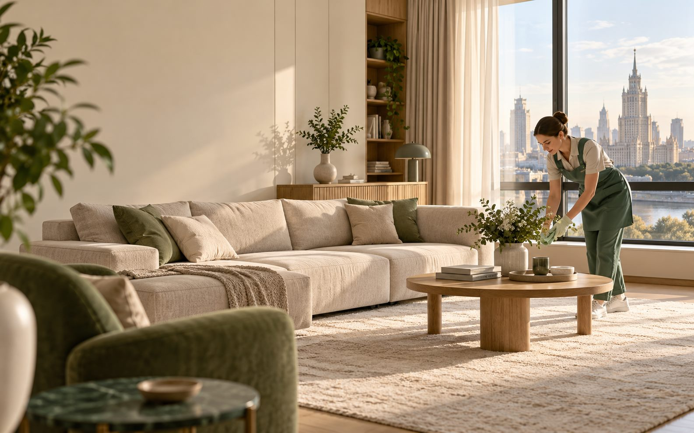
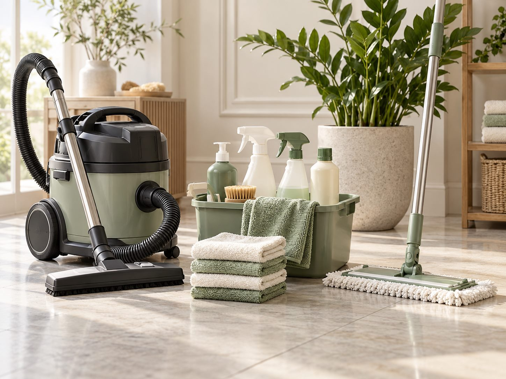
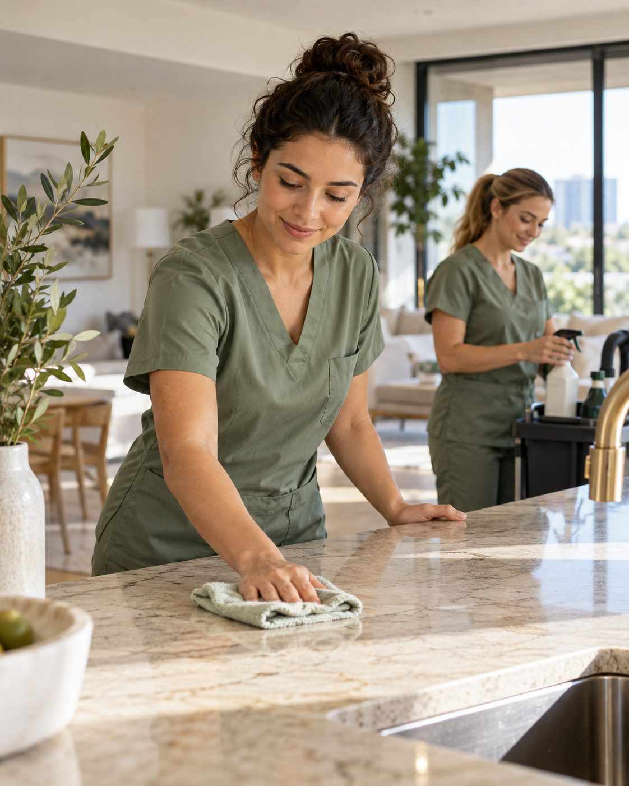

01 / КВАРТИРА
Поддерживающая уборка
Регулярный уход за жилыми комнатами, кухней и санузлом, чтобы дома всегда было легко дышать.
от 3 900 ₽↗

Профессиональная уборка квартир, домов и офисов в Москве и области. Бережно к вашему пространству, точно к вашим планам.
Выберите подходящую услугу. Точный состав работ и стоимость согласуем после короткого разговора.
Регулярный уход за жилыми комнатами, кухней и санузлом, чтобы дома всегда было легко дышать.
Тщательная работа с труднодоступными местами, поверхностями и деталями, которым давно нужно внимание.
Удалим строительную пыль и приведём пространство в порядок перед вашим возвращением или переездом.
Чистое рабочее пространство для команды и гостей. Разовый выезд или регулярное обслуживание.

Мы выстраиваем уборку вокруг вашего пространства: уточняем пожелания, подбираем средства под поверхности и заранее обсуждаем результат.
Учитываем особенности материалов и ваши пожелания по средствам.
Используем подходящие инструменты для разных зон и задач.
Согласуем объём, время и стоимость до начала уборки.
Уборка — это доверие. Поэтому мы ценим аккуратность, уважение к вашему дому и спокойное общение на каждом этапе.
Наша задача — сделать так, чтобы вы заметили результат, а не хлопоты вокруг него.

Четыре понятных шага от первого сообщения до чистого пространства.
Расскажите, что и когда нужно убрать.
Обсудим площадь, задачи и пожелания.
Назовём итоговую стоимость и время.
Позаботимся о чистоте вашего пространства.
Выезжаем по Москве и в города Московской области. Условия выезда за МКАД уточним при расчёте.
Если вашего вопроса здесь нет, оставьте заявку — всё обсудим лично.
Состав зависит от выбранной услуги, площади и состояния помещения. Перед выездом согласуем список работ и итоговую цену.
Нет, базовые профессиональные средства и оборудование привозим с собой. Если у вас есть предпочтения по средствам, укажите их в заявке.
Да, желаемую дату и время можно указать в заявке. Возможность выезда подтвердим при согласовании.
Учитываем площадь, тип уборки, дополнительные задачи и расположение объекта. Цены на сайте ориентировочные.
Опишите задачу — подготовим предложение и свяжемся с вами для уточнения деталей.